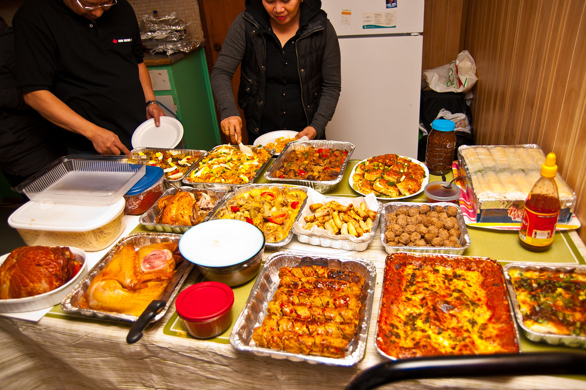
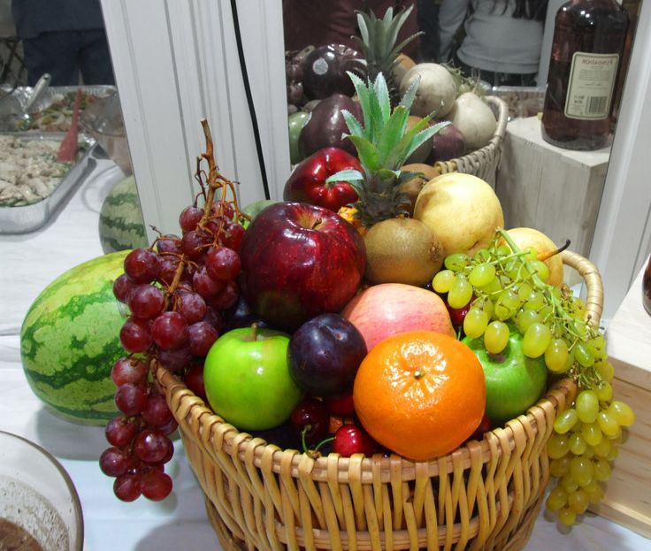
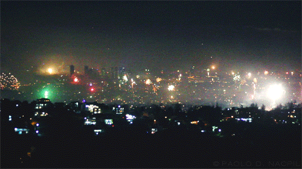
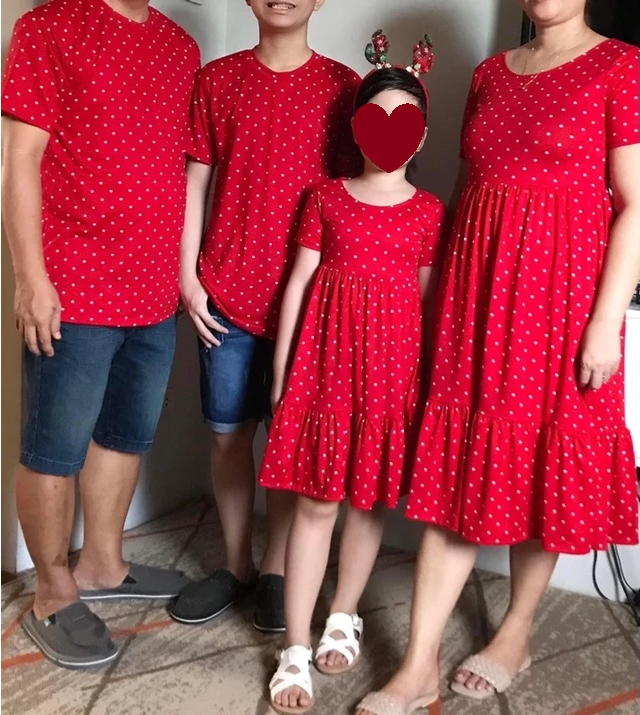
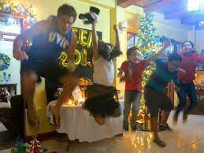
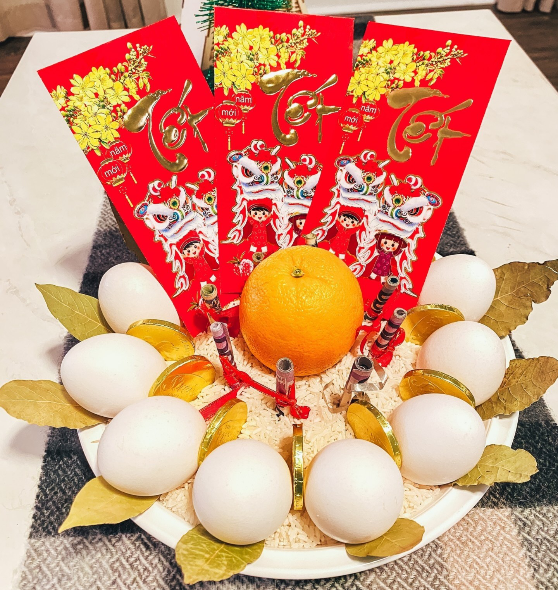

New Year’s Eve in the Philippines is a grand and lively celebration filled with traditions that reflect the country’s culture, beliefs, and hopes for prosperity. Unlike in other parts of the world where the celebration is centered on fireworks displays, Filipinos embrace a mix of superstition, food, and family customs. From preparing 12 round fruits for good fortune to lighting firecrackers to drive away evil spirits, each practice is deeply rooted in the Filipino way of life.
Filipino New Year traditions are influenced by a mix of Chinese, Spanish, and indigenous beliefs. During the Spanish colonization, Catholicism played a role in shaping the celebration, emphasizing gratitude and prayers for blessings in the coming year. The Chinese influence, particularly in business-minded Filipino communities, introduced practices such as the belief in lucky fruits and wearing polka dots. Meanwhile, indigenous Filipinos have long believed in making loud noises to ward off evil spirits, which has evolved into the widespread use of firecrackers today.

🍽️ Media NocheA lavish meal is prepared on the evening of December 31, symbolizing abundance and good fortune. Families gather to share dishes such as lechon (roast pig), pancit (for long life), sticky rice desserts like bibingka and biko (for family unity), and other delicacies believed to bring prosperity. The tradition of feasting comes from Spanish influence, with “Media Noche” meaning “midnight” in Spanish. It reflects the Filipino value of family togetherness and the hope for a bountiful year ahead.  |
🍇 12 Round Fruits for Good LuckFilipinos prepare 12 different round fruits on their dining tables, each representing good luck for the 12 months of the year. Fruits such as grapes, apples, oranges, and watermelons are chosen for their round shape, which resembles coins, symbolizing wealth. This tradition originates from Chinese culture, where round objects are associated with prosperity and continuous wealth.  |
🧨 Fireworks and Firecrackers to Ward Off Evil SpiritsThe belief that loud noises drive away bad spirits dates back to pre-colonial times when early Filipinos used bamboo cannons (lantakas) and gongs to scare off evil entities. Today, firecrackers (like "kwitis" and "sawa") and fireworks displays are a staple of New Year’s Eve, symbolizing the banishment of bad luck and the welcoming of new opportunities.  |
👗 Wearing Polka Dots and the Color of the YearWearing polka dots is believed to attract wealth and fortune because the round shape resembles coins. This superstition comes from Chinese influences, where circular patterns symbolize prosperity. It used to be a tradition to wear red clothes on New Year's Eve, as red symbolizes good luck, prosperity, and positive energy. Instead of just red, many Filipinos now wear outfits inspired by the Pantone Color of the Year, believing it will bring good luck and align with global energy trends. Each year, the color changes and influences fashion choices during the celebration.  |
🤸♀️ Jumping at Midnight for GrowthA common tradition among children is to jump as high as possible when the clock strikes midnight, as it is believed to help them grow taller. Some even take this superstition to the next level by jumping from stairs or elevated surfaces, hoping it will give them an extra height boost in the coming year. While this superstition has no scientific basis, it remains a fun and playful part of the celebration, especially among families with young children.  |
🪙 Prosperity DisplaySome families prepare a Prosperity Bowl, a decorative arrangement of symbolic items believed to attract wealth and abundance in the new year. It often includes rice for sustenance, rolled paper bills for financial prosperity, eggs for stability, and oranges for good fortune. Others also throw coins around the house or hang paper bills on curtains, doors, or walls, hoping for a steady flow of money throughout the year.  |
As midnight approaches, Filipinos eagerly count down the last seconds of the year. Families stay up late, watching TV countdowns or celebrating at home and in public events.
At exactly 12 AM, the sky bursts with fireworks, signaling the start of the new year. The celebrations begin with:
Filipinos love making New Year’s resolutions to improve themselves—whether in health, relationships, or finances. Many jokingly say, “Magpapapayat na ako, promise”, though not everyone keeps their promises.
More than just resolutions, Filipinos believe that starting the year with happiness and positivity brings good luck. Laughing, celebrating, and welcoming the year with joy is thought to make the whole year prosperous and successful.